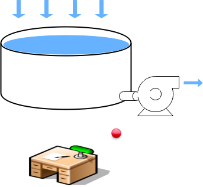
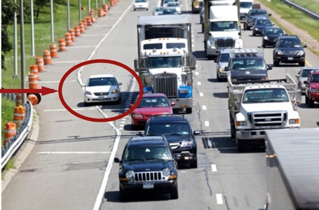
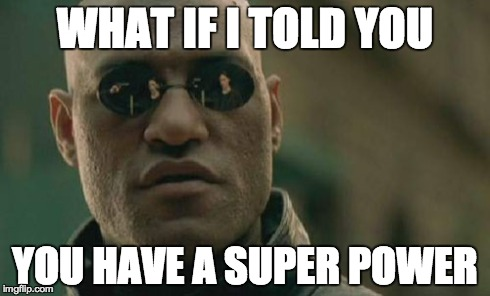
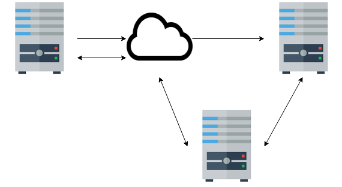

# Test Slide (H1) <hr> <img align="right" src="testpattern.gif" width="500px"> ## H2 ### H3 Faces: <font face="DejaVu Sans">😈</font><font face="DejaVu Sans">üòá</font> #### H4 Text > Quoted <hr> --- --- # Goals ### This talk should make you feel _uncomfortable_.<br> ### This talk is not intended to make anyone feel _unsafe_.<br> (Please follow up with organizers, per CoC.) --- # Definitions ## comfortable Environment is within tolerable parameters. -- ## safe Not in danger; free from harm's reach. --- # Deceptive Similarity -- ## When you feel comfortable... No action is necessary -- ## When you feel safe... No action is necessary --- # Critical Distinction -- ## When you feel **un**-comfortable Ignoring it is an option -- ## When you feel **un**-safe... Immediate corrective action is necessary (fight/flight/etc.) --- # Motivating Example ## Workplace setup is a matter of comfort --- # Motivating Example  ## Workplace setup is a matter of comfort ## ... until it's a matter of safety. --- class: center, middle # <span style="font-size: 96px;">Use Your Superpower<br>To Be a 10× Developer</span> --- # 10× Developer <img style="padding-left: 10px;" align="right" src="man-month-cover.jpg" width="25%"> The Mythical Man-Month: <div style="padding-left: 22pt;" width="73%"> ...a group of experienced programmers. Within just this group the ratios between best and worst performances averaged about 10:1 on productivity measurements and an amazing 5:1 on program speed and space measurements! </div> --- # 10× Developer <img style="padding-left: 10px;" align="right" src="man-month-cover.jpg" width="25%"> The Mythical Man-Month: <div width="73%" style="padding-left: 22pt;" > ...a group of experienced programmers. Within just this group the ratios between **best** and **worst** performances averaged about 10:1 on **productivity** measurements and an amazing 5:1 on program **speed** and **space** measurements! </div> -- ## Interpretation * ‚Äúdeveloper output varies by **project** and **individual** and **metric**‚Äù * not ‚Äúsome developers are 10× better than average‚Äù --- # Our brains have bugs ## Benham Disk <img align="right" width="400px" src="./disc.png"> --- # Our brains have bugs ## Benham Disk (Spinning) <img align="right" width="400px" src="./disc-spinning.gif"> --- # Our brains have bugs ## Benham Disk (Done) <img align="right" width="400px" src="./disc.png"> --- # Fundamental Attribution Error  ## What do you think about the people in this car? -- ### bad people ? -- ### bad situation ? -- ## Does it depend on which car you're in? --- # Fundamental Attribution Error ## We tend to believe -- ### <font face="DejaVu Sans">😈</font> others' bad actions are caused by their bad character -- ### <font face="DejaVu Sans">üòá</font> our own bad actions are caused by our environment -- ## In general we **underestimate** environmental factors --- # 10× ## Instead of looking for 10× **developers** ## We should be looking at **environments** --- # 10× ## It's hard to identify causes for **10×** environments -- ## We should look for **0.1×** environments -- ## and **DESTROY** them --- # A Productivity-Destroying Environment ## Eliminate factors that make people feel **unsafe** at work ---  --- # Your Super Power ## What if your super power was an *inability* to see factors that contribute to 0.1x environments? -- ## We call that super power ‚Äúprivilege‚Äù. <img src="morpheus-smile.gif"> --- # A Productivity-Destroying Environment -- ## Three kinds of events * whole tank is overflowed in one transaction -- * fluid is added at < max outflow -- * fluid is added at > max outflow -- ## Things Add Up --- # Definition ## Microaggression > social exchanges in which a person says or does something (possibly accidentally or without intended malice) that belittles and alienates a member of a marginalized group. -- ## Pouring sewage into a person's tank faster than they can pump it out. --- # Examples of Microaggressions ### Man (to a woman): > You should get a tattoo or something to prove you're nerdy enough to be here. -- ### Message: You don't belong here, you need to prove yourself. --- # Examples of Microaggressions ### Speaker 1: > We need to get a motherly person at [location] to take care of us. ### Speaker 2: > They're all too busy working out and looking pretty -- ### Message: Women should do domestic work and be ornamental -- they are not engineers or project contributors. --- # Examples of Microaggressions Here's an excerpt from "learn you a haskell for great good" -- ### Message: 'Balls' are intrinsically funny, especially 'gay' ones. Why are we even talking about balls, in a programming language learning resource? --- # What About Intent <img align="center" src="intent-tweet.png" width="500"> -- ### That's an unrealistic aspiration > Intent matters, but only after the fact, to distinguish between misunderstanding and threat --- # Personal Anecdote ??? in high school I was hanging out with my literary friends. We used sarcasm. We knew all the tricks, dramatic irony, metaphor, bathos, puns, parody, litotes and satire. A woman that I didn't know very well said something to me, sort of a backhanded compliment I responded with (what I intended to be) a sarcastic, self-deprecating reference to a character from a story ... and she ran out of the room crying. --- # Analogy: Protocol for Communication * peer 1 sends a message to peer 2 -- * peer 2 responds > ‚ÄúI received a message and it appears you are hostile.‚Äù -- * peer 1 responds > ‚ÄúThat's not what I meant! Why are you bring so sensitive?!‚Äù -- * peer 2 cuts peer 1 out of its trusted network --- # Better Protocol  * peer 1 sends a message to peer 2 * peer 2 responds > ‚ÄúI received a message and it appears you are hostile.‚Äù -- * peer 2 communicates with trusted peer 3 * peer 3 brokers a resumption between 1&2 * normal 1⟺2 communication resumes ??? Ultimately a mutual friend was able to vouch for me and I had an opportunity to apologize and eventually we became friends --- # I know **I** don't do things like that -- ## Because nobody ever calls me on them -- ## Possible causes: -- #### I'm not dumping any sewage? > my buggy brain wants me to believe this <br> > (Fundamental Attribution Error)<br> > it's probably not true -- #### People are trying to call me on it, but I'm ignoring them. -- #### People are choosing not to call me on it because they don't want <br>to deal with me. -- > can I rule these out? --- <img align="center" src="vuln-tweet.png" width="750"> ??? So at JSFest Jenn threw down this challenge. I'm not going to talk about impostor syndrome, I don't know enough about it. (I am a world's expert on Dunning-Kreuger, though.) [laugh line] It's pretty hard for someone like me to make myself vulnerable. I am a straight, white, heterosexual, cis-gendered, well-off, male US citizen who is not too young and not too old. But I'll give it a shot. --- # Definition ## Community ### A group of people who have _sacred values_ in common. > We identify sacred values and circle around them. Jonathan Haidt, "The Righteous Mind" (2012 book) --- # Javascript Community's Values > (my inferences based on observations) ## Be Kind ## Help People ## Care ??? --- # Personal Anecdote ??? So I decided I wanted to join this community, the javascript community. I decided to attend a weeklong conference, JSFest 2014. And then #gamergate happened. And I discovered that I couldn't follow or RT some people on twitter. I found out that I was on a blocklist. At first I thought this was some mistake, because although I could find the date that I was added to this list, I couldn't find a tweet in my timeline that made sense to have caused that. But um, "luckily" for me the people who run that blocklist keep records of these things and they were able to point out exactly what I had said. And this is where I would like to say, I recognized that I had done something unkind. But actually my first reaction was about how unfair it was, and how could these people who didn't even know me be so mean to me and not even take a joke, and all kinds of other embarrassing tantrum-y things. But I was lucky because I had decided that I would wait a full day between each response I made to this thread. --- # Personal Anecdote ??? And I realized that they had done a very reasonable thing. They had identified me as possibly hostile, not tried to engage with me and change my mind (which probably wouldn't have worked at the time), and just marked me as a threat. And I was able to introspect and see that I had been rude, mean, unkind. And I felt embarrassed. And I felt ashamed. And so I apologized. And about a week later I was taken off the blocklist. --- # Personal Anecdote ??? And now I can RT again, and fully interact with the community, and that's because some strangers were really, really kind to me. They identified something I had said that was hurtful; they didn't confront me, but gently informed me about it (by putting me on a block list); and they gave me a second chance. It was a priceless service, and they did it all for free. So as I said above I feel ashamed about this, but if you have curiosity about it you can find it pretty easily or you can just talk to me later, 1-to-1 or online. --- --- # How to be a 10× Developer ### Do 10× times as much work (increase by ~1000%) <img src="1-10x" align="right"> --- # How to be a 10× Developer ### Help 10 people each double their output (increase by 100%) --- # How to be a 10× Developer ### Help 100 people each increase output by 10% --- # How to be a 10× Developer ### Help 1000 people each increase output by 1% --- # Motivational Quote ## There's no limit to the amount of good you can accomplish if you don't care who gets the credit. -- ## ‚Äî anonymous --- # Responding to microaggressions ### -We need to get a motherly person at [location] to take care of us. ### -They're all too busy working out and looking pretty -- ### I responded > Maybe you need a fatherly person instead. My kids say I make pretty good pancakes, how about if I come around tomorrow morning? --- # Responding to microaggressions ### You should get a tattoo or something to prove you're nerdy enough to be here. -- ### I responded > She doesn't need to do or have anything to prove she belongs here. Being here is proof enough. --- # Making Mistakes ## In speaking out, you will make mistakes ## But saying nothing is a different kind of mistake -- ## You may have to make yourself un-**comfortable** ## in order to help someone feel **safe** ??? Sometimes people feel like they can't or shouldn't contribute or respond because they might say the wrong thing. That's a good worry, and it probably will happen that you say the wrong thing. But consider that saying nothing is probably also a wrong thing. --- # Thank You ## May your tank be empty, and your pumps be strong. # ## Contact: @sammikes, smikes , cubane.com